The Oregon Trail
The Context
In 1966 a University of Minnesota College of Education entity, the Educational Research and Development Council (ERDC), formed a larger computing consortium, much like the BOCES system in New York. The ERDC proposed that Minneapolis-St. Paul school districts join forces to purchase a time-sharing mainframe and introduce terminals at schools throughout the Twin Cities.
In 1967, this initiative led to the creation of the Minnesota School Districts Data Processing Joint Board, soon renamed Total Information for Educational Systems (TIES), encompassing eighteen area school districts.
One of the many Minneapolis schools with a TIES terminal in the early 1970s was Bryant Junior High School in south Minneapolis. In 1971, two Carleton College math majors named Paul Dillenberger and Bill Heinemann were teaching students at Bryant while rooming with a third Carleton student named Don Rawitsch. Rawitsch was a student teacher in American history at a school in north Minneapolis.
The above photos are from the Carleton College Yearbook from 1972. From left to right is Don Rawitsch, Bill Heinemann and Paul Dillenberger.
One night, Dillenberger and Heinemann returned home to discover their roommate plotting an elaborate board game on the floor of their living room. Rawitsch was due to teach a unit on Western expansion in a little over a week and he felt the students might find the subject a bit more engaging if he created a board game depicting travel along the famed Oregon Trail.
What Rawitsch had so far was a board game tracing a path from Independence, Missouri to the Willamette Valley in Oregon. The students would pretend to be pioneer families. Each player would start with a certain amount of money. With that starting capital, they could buy oxen, clothes, and food. Students would advance with the roll of a die and the drawing of random event cards. Those event cards meant that, along the way, the students would encounter various events, usually misfortune: broken limbs, thieves, disease. In roughly twelve turns, the students would simulate the actual two thousand mile journey that thousands of pioneers made to the west coast in the nineteenth century.
The Minneapolis school district, where all three taught, had recently purchased a mainframe computer, and each school in the district had a teletype terminal for remote access to the computer. Heinemann had taken the only computer course offered by Carleton and he had been pondering creating a program allowing a user to interact with a computer through natural language but he hadn't yet landed on a concept that he could implement. When Heinemann saw Rawitsch trying to draw a map of the American West on a four-foot sheet of butcher paper, he suggested to his two roommates that they create the game on a computer instead.
I was fascinated by the power of the computer to not only calculate, but also to interact with written language. I had been thinking about writing a program to interact with a human through language, but the content of such a program remained a mystery to me. Bill Heinemann
This makes you wonder if Heinemann had been aware at all of ELIZA. Nothing Heinemann has said in any interviews indicates that he was. This is interesting, of course, because that idea of "interact with a human through language" is interesting. Certainly this was something that ELIZA had been doing and, later, it would become a defining element of text adventures.
The two of them brought the computer aspect into it. My role was to bring the history into it and suggest the various things that could happen to settlers traveling the trail. Don Rawitsch
Rawitsch had already spent about a week designing the board game. Keep in mind that he had planned to chart player movement across the map through dice rolls while having the students draw random event cards to simulate the hardships encountered on the trail. For the computerized version, the trio translated movement into a fixed amount of progress each turn based on a speed chosen by the player. They also added the idea of consumption of resources, such as food and medicine, to the implementation.
In place of random event cards, the three guys created a flow chart of misfortunes that could occur and tied them into the terrain that the player was traversing. This meant that attacks by bandits would be more likely in the plains while cold weather problems were more likely to occur in the mountains.
Don had ideas on how the board game would work, but when Paul and I decided to computerize it, there we some things that we changed. One of the goals I had was to make the randomness tied to the geography. You were most likely to be attacked in the western plains. Cold weather was more likely to be encountered in the mountains in Wyoming and Oregon. I put all the random events into a table of probabilities so it would be easy to add new events or adjust the probability of things happening. Bill Heinemann
The general gameplay loop was that, facing obstacles along the way, the supply numbers would go down as the mileage number goes up. Thus the student's goal would be to get the total miles traversed to reach the significant threshold of 2,040 miles — the distance of the historic route from Independence, Missouri to Oregon City, Oregon — before their supplies ran out.
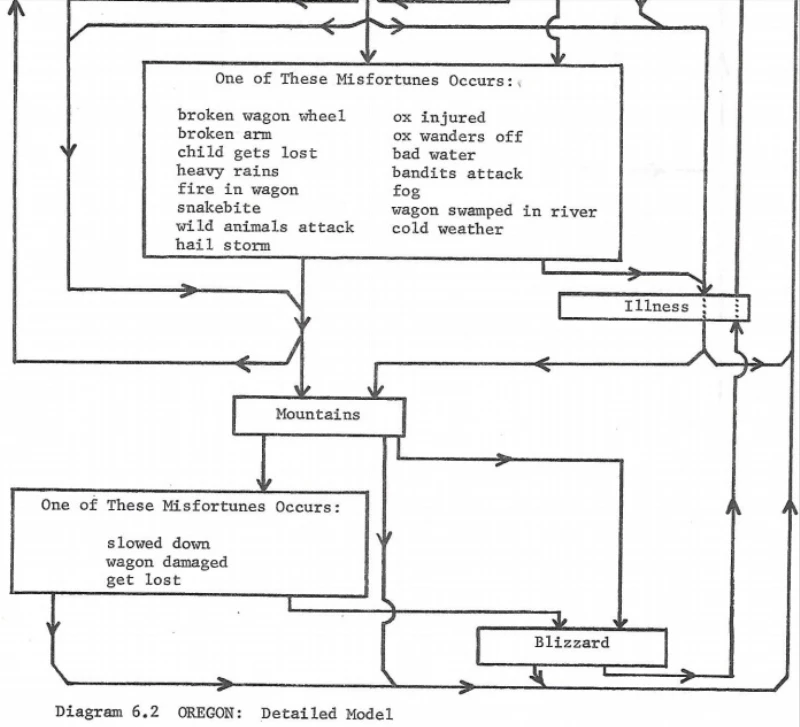In this way, the game could be said to be at least similar to The Sumerian Game from a resource management side of things. The game would essentially be a simulation that was wrapped around a narrative.
The Gaming Experience
What came to be "The Oregon Trail" was first played by Rawitsch's students on 3 December 1971. The game proved a hit with both Rawitsch's class and the students at Bryant Junior High.
The context of play is important to keep in mind. At the time, computers were new to education; there were generally no monitors and students played the first version of the game on a teletypewriter; essentially, an electromechanical typewriter that could communicate, via phone line, with a large, mainframe computer.
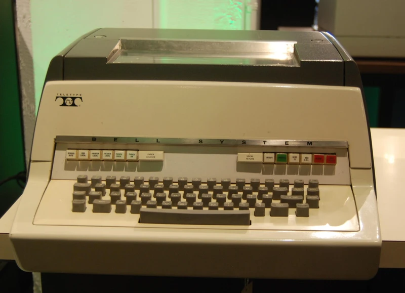 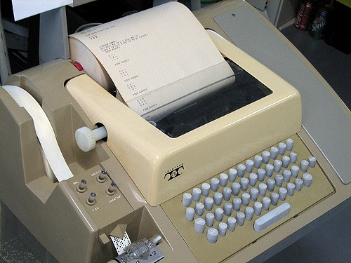Thus the game was text-based and paper-based; a student would type out his or her commands on a roll of paper, and the computer would respond by typing back status updates.
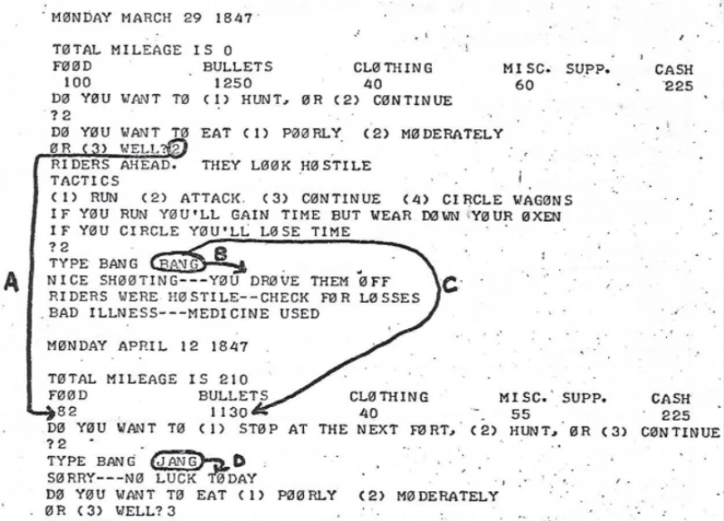What you see above pretty much tells you how this would have played out from a student perspective. Most students at the time would connect to a distant system via timeshare, typing command-line instructions on a machine that looked very much like a typewriter, as you can see above. Except that here the "typewriter" would type back to you: printing the output from a distant computer at a crawling ten characters per second.
So Don Rawitsch would have had to wheel in a relatively bulky teletypewriter, plug in the power and phone cables, dial a number on a rotary pad that would connect the machine to a much more expensive HP 2100 minicomputer that wasn't even in the same building. And keep in mind that there was also only that single teletype terminal. So Rawitsch had to cycle the students through in groups, a single student at the keyboard while others clustered around waiting their turn.
The Game Context
Like High Noon and ROCKET, it was obviously the case that The Oregon Trail provided a narrative. Even more than in the former games, you take on a very specific role. The start of the game sets up your context:
THIS PROGRAM SIMULATES A TRIP OVER THE OREGON TRAIL FROM
INDEPENDENCE, MISSOURI TO OREGON CITY, OREGON IN 1847.
You are put into a game world as a protagonist:
YOUR FAMILY OF FIVE WILL COVER THE 2000 MILE OREGON TRAIL
IN 5-6 MONTHS --- IF YOU MAKE IT ALIVE.
And there is a definitive ending:
YOU FINALLY ARRIVED AT OREGON CITY
AFTER 2040 LONG MILES---HOORAY!!!!!
PRESIDENT JAMES K. POLK SENDS YOU HIS
HEARTIEST CONGRATULATIONS
AND WISHES YOU A PROSPEROUS LIFE AHEAD
AT YOUR NEW HOME
That's a successful ending. The game, even upon failure, had an interesting approach of situating you in that fatal history:
DO TO YOUR UNFORTUNATE SITUATION, THERE ARE A FEW
FORMALITIES WE MUST GO THROUGH
WOULD YOU LIKE A MINISTER?
WOULD YOU LIKE A FANCY FUNERAL?
WOULD YOU LIKE US TO INFORM YOUR NEXT OF KIN?
YOUR AUNT NELLIE IN ST. LOUIS IS ANXIOUS TO HEAR
Yes, the grammatical error of "DO" instead of "DUE" is in the original!
Yet even with those trappings of narrative, The Oregon Trail, much like those earlier simulations, is basically one of resource management. In The Sumerian Game you were managing food resources. In ROCKET you were managing fuel resources. You could even argue in High Noon that you were managing your bullet resources.
In The Oregon Trail, play proceeds through a series of up to eighteen turns, each representing two weeks on the trail. At the beginning of each you can choose whether to hunt or simply press onward. So essentially it becomes a choice-of-action game.
The game tracked student progress in terms of miles traversed. Plotting, such as it was, consisted of two-week turns. The game was structured as a repeating cycle. Each cycle represents two weeks of travel on the trail. The tension is that as your number of supplies goes down, your mileage number goes up. You essentially have to cover that slightly over two thousand miles before you run out of supplies. A successful journey requires approximately twelve cycles but that number depends upon various circumstances that affect the rate of travel.
Where The Oregon Trail is a bit unique is that can succeed as a narrative experience in that it's procedural level really does reflect the actual experience of a settler on the trail. You're worrying about where you're going to find enough food to eat, whether the weather will hold out long enough, and so on. This is as opposed to solving a bunch of arbitrary puzzles that have little to do with the ostensible story. It's even possible to be dealt a hopeless hand in the form of a series of huge disasters you couldn't possibly have planned for — again, just like a real settler.
What's also nice is that there can be a strategy that is more-or-less workable.
In fact, that gets interesting when you consider later incarnations of the game. For example, in the 1985 version, if your only goal is to finally finish the game inside of roughly forty-five minutes, you play as the banker. Make sure to tock up on food and spare wagon-parts. Your strategy should then be to run the oxen hard and overfeed the settlers. Buy one new oxen for every two that die and always pay to cross a river instead of fording it. By doing this, you'll find that you're in Oregon before the first snow.
For the previous versions of the game, the strategy can be a little less formulaic. Essentially, in these versions, you should buy little if any food, reserving your precious money for other things. You then hunt about every other turn, assuming you feel comfortable typing the hunting command quickly. It's also a good idea to not to carry too much stuff at any time, since you always seem to end up losing it in some disaster or other. Traveling light, however, does mean you have to make more stops at forts. So what this situational strategy means is that the biggest problem is usually running out of time, thus being trapped on a mountain trail when winter arrives.
The Programming Context
The trio wrote the game in HP Time-Shared BASIC on an HP-2100 series minicomputer.
Apparently most of the programming proved straightforward, but one difficulty was implementing hunting in the game, which could be used to replenish food resources. The solution came from Heinemann, who realized that BASIC could not only register inputs from the teletype but could also register the length of time *between* inputs. Heinemann took advantage of this feature to make results dependent on how fast the player could accurately type the word "Bang."
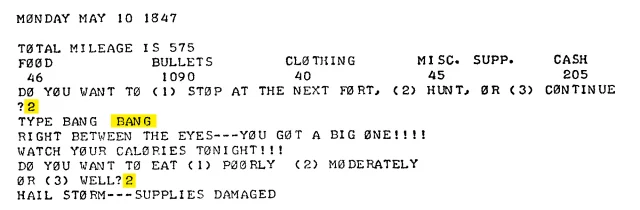The teletype Rawitsch and crew were using had an internal bell, used as in a traditional typewriter to mark the end of a line while typing. However, this bell was also activated by the computer at the other end of the connection to signal errors or alerts. In the game, certain noteworthy events like scoring a perfect shot while hunting would ring this bell. The line of BASIC that outputs the message above reads:
1755 PRINT "RI"'7"GHT BETWEE"'7"N THE EYE"'7"S---YOU GOT A"'7" BIG ONE!!"'7"!!"
The 7 is the ASCII code to ring the bell. Since each "7" is spaced about ten characters apart, this meant the bell would ring once per second as this line was printed out.
Almost every event in the game involves some random variation in its outcome, but rarely so much as to seem unfair or unpredictable. For example, a random event testing your preparedness against cold weather in a mountain pass is instantiated by this source code:
2935 PRINT "COLD WEATHER---BRRRRRRR!---YOU ";
2940 IF C>22+4*RND(0) THEN 2955
2945 PRINT "DON'T ";
2950 C1=1
2955 PRINT "HAVE ENOUGH CLOTHING TO KEEP YOU WARM"
2960 IF C1=0 THEN 3100
2965 GOTO 4700
The variable C in line 2940 stores the dollar amount the player has spent on cold weather gear. So this code effectively says "If the player has at least (22 + a random number between 0 and 4) clothing, that's sufficient to stay warm."
A player might figure out through trial and error that while $20 spent on clothes is never enough and $30 seems always sufficient, there's some uncertainty from game to game about where exactly in the middle is safe. There is some verisimilitude here that could correlate to the unpredictable strength of a winter storm.
This line determines the likelihood each turn of being attacked:
2100 IF RND(0)*10>((M/100-4)^2+72)/((M/100-4)^2+12)-1 THEN 2500
The equation pivots on the M variable, representing the number of miles traversed. Offsetting it and dividing it by differently scaled amounts creates a curve of probability distribution across the student's journey. This has the effect of making attacks more likely as the student moves away from settled Missouri, and then less likely again as they approach their final destination.
This mathematical trick establishes a deepening and then easing sense of danger, without printing any text to this effect explicitly to the player. A similar trick increases the chance of cold-weather hazards during the middle of the journey when the homesteaders would logically be crossing the Rocky Mountains, even though the game never explicitly mentions this geography.
From the point of view of game mechanics and considering the geography aspect, the game lacks explicit markers of progress other than the increasing mileage number. What the above shows is that the game was designed to still give players a sense of forward progress and geographical consistency.
The Legacy of the Game
It's worth noting that When Rawitsch left the district in 1972,he deleted the game from the system. The only part of it that still existed at that point was a printed out listing of the source code.
The success of TIES in the Minneapolis area had attracted the attention of the Minnesota legislature, which mandated that the same computing services be provided to the entire state. This led to the creation of the Minnesota Educational Computer Consortium (MECC) in 1973 to provide time-sharing to all 435 school districts in Minnesota. A UNIVAC 1100 mainframe was installed at MECC's Minneapolis headquarters and over one thousand terminals were connected to it from schools throughout the state. In 1974, Rawitsch asked if MECC might be interested in distributing his game on the time-sharing system. As a result of this, The Oregon Trail was soon being played across the state of Minnesota.
The UNIVAC was a mainframe rather than a minicomputer like the HP-2100 but it did have a version of BASIC available. So Rawitsch set about creating The Oregon Trail on this machine. In fact, it was long thought that Rawitsch simply ported the game to the new system. Interviews with him, however, indicate that this wasn't the case. Instead he typed the program out once again on another HP-2100 system, using that listing of source code that he had. In order for the game to eventually run on the UNIVAC implementation of BASIC, this new version that Rawitsch re-wrote had to be modified.
For historians looking into this, what wasn't entirely clear is when all that happened or how much had to be modified. What is known is that The Oregon Trail was enhanced by Rawitsch to be more historically accurate, to provide a bit more consistency in terms of some game mechanics, and to be a little more entertaining. That was simply modifying the game concept itself. Then there the modifications that someone else seems to have made to get the game to play on the UNIVAC.
That version — this modified version or perhaps even a few persons — was played by thousands of schoolchildren all over the state during the next several years. What is clear is that in 1975, Rawitsch made the game available to all of MECC's users. OREGON (as it was called) soon became the most popular educational activity on the system and it remained so until MECC shut down its mainframe operations in 1983.
In 1977, MECC replaced the UNIVAC (or perhaps the HP-2100) with a CDC Cyber-73 system, and The Oregon Trail was modified to run on it, this time in CDC Cyber BASIC. It seems this was the version that appeared in Creative Computing in the July-August 1978 issue.
So, for the longest time, this was the only version that any one actually had. The prior history of implementation of The Oregon Trail, from 1971 to 1977 was, it was thought, entirely lost.
But then, in 2001, an old tape image from a school district of York County, Pennsylvania turned up and on it was a program that had the name "Oregon." Sure enough, when loaded up, there was a version of The Oregon Trail that was dated 27 March 1975.
What's evident is that Rawitsch, or MECC — or someone — continued to improve and refine the game for years before it made its way to the Apple II, which would have been sometime in 1980. By 1980 MECC had purchased around five hundred Apple II machines and installed them in classrooms all over Minnesota, where children used them to play the freshly ported Apple II version of The Oregon Trail.
The 1978 version found in Creative Computing has some features not present in the 1975 version. In both versions, the player has to enter a word quickly into the terminal at certain points, such as when hunting or being attacked. The 1978 version, however, has a difficulty setting. When the program starts, the player is asked how good a shot they think they are (“ace marksman” to “shaky knees”) This determines how much time the player is given to type the word. And unlike in the 1975 version (which only allowed players to type “BANG”), in 1978 that word is chosen randomly from four possibilities (“BANG,” “BLAM,” “POW,” and “WHAM”).
A peculiarity that The Oregon Trail shares with many other BASIC games of this era is that it seems to expect — even to depend upon — the player having a look at the code in order to fully understand what's going on in the game. In fact, much early gaming was exactly like this. Code spelunking was considered part of the experience of exploration.
As one example, looking at the source code tells you that stopping at a fort for supplies dramatically reduces the miles you can cover in a single turn. That is in no way clear from the game itself.
I have the basic versions of both Oregon 1975 and Oregon 1978 if you're curious to take a look at them.
So let's use that article I referenced earlier and treat these as versions 2.0 (1975) and 3.0 (1978). What we're missing then is version 1.0, the one written back in 1971 and the one that started everything off.
The challenge there is that this version apparently never made it beyond the system on which it was written. And we know Rawitsch deleted it off of that system in 1972. But we have a bit of history that says it survived. Remember that listing of source code I mentioned? Consider this bit of evidence:
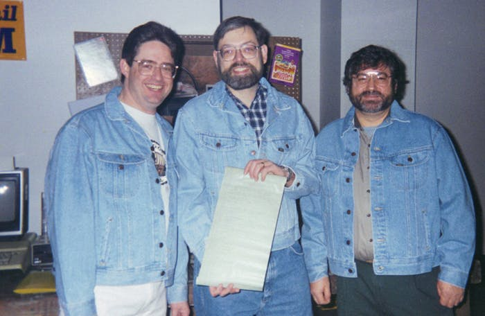That picture is from an Oregon Trail anniversary event at the Mall of America in 1995. Rawitsch is holding something that looks like a computer printout and it would be interesting if it was the one he took with him all those years ago. That said, the printout does appear to be lost given that Rawitsch has no idea what ultimately happened to it.
What this means is that it's likely that the 1975 version is the best we'll be able to do. Which is better than the 1978 that was our previous best.
Looking at the code of the 1975 version does tell some very interesting stories in itself.
For example, we can tell that — accounting for the time frame and the language used — the program was written by a careful programmer. But we can also recover the knowledge that it was maintained by someone who was less experienced. Or perhaps simply lacked the time to continue the discipline of the original programmer. This makes sense with what we know of the history. Heinemann and Dillenberger, remember, wrote the first code. They were programmers. Rawitsch was not a programmer but he was ultimately the one who maintained the code.
Just looking at the structure of the code tells us something. While most of the program is numbered in steps of 5, this pattern is occasionally broken. This is somewhat odd because HP-BASIC had a fairly decent renumbering facility. Rawitsch probably didn't know about it or care one way or the other. But what's interesting is that we can assemble a list of lines which break the numbering pattern.
And why does that matter? Because these probably indicate places where Rawitsch made changes or additions as the program evolved. Here are some examples:
- Line 8-11 Added MECC name, maintainer, and version
- Line 262-263 Caution user against using a dollar sign
- Line xx99 added section names in remarks
- Line 1332 require user answer to be an integer
- Line 1537 added caution about spending
- Line 1752 discovered that 7 was a bell, added note to that effect
- Line 1902 made question two lines
- Line 2392 fixed bug when riders don't attack
- Line 2672 added ammunition losses to heavy rains losses
- Line 2792 added ammunition losses to fire losses
- Line 2891 may have changed Indians to wolves and cause death
- Line 3147 added ammunition losses to wagon damage
- Line 3317 added ammunition losses to blizzard damage
- Line 3650-3658 added next of kin and aunt Nellie
- Line 4012 added another note about 7 bells
- Line 4279 changed congratulatory message
And why does that matter? Because — and this is key to thinking like a historian — working from these clues and the historical record, it might be possible to reconstruct the original 1971 version of The Oregon Trail.
Obviously the end result would inevitably be a bunch of conjecture and speculation. But it would possibly be informed conjecture and speculation. To give you an idea, I have a small diff that shows some of this process in action.
Yet there's a cautionary tale here. While we can learn a lot from the line numbers, we can't know what modifications Rawitsch might have made within certain lines.
By 1979, MECC was buying Apple II computers in large quantities (at a discounted price), and reselling them at cost to schools all over Minnesota. In 1980 MECC also began to distribute disks containing Apple II software to these same schools. Each disk contained a collection of programs ported over from MECC's mainframe computer. The OREGON game appeared in two of these collections, one of which was named "Elementary Volume 6":
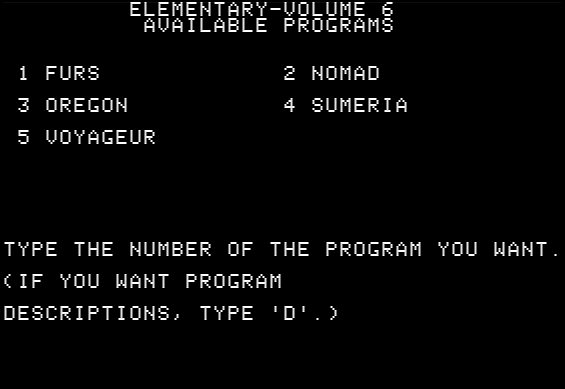It's possible to execute the disk image for MECC Elementary Volume 6 v1.2.
It's worth noting the "Sumeria" on that list. That refers to Hamurabi.
For thirteen years, from 1971 to 1984, the OREGON game had remained essentially unchanged. There are core concepts that have survived in every incarnation of the game. These core concepts are:
- The player buys supplies before starting the journey to Oregon.
- There are opportunities to hunt for food along the way.
- There are opportunities to make purchases at forts along the route.
- The player must manage the level of supplies to avoid running out.
- The rate of travel depends upon the current conditions.
- Misfortunes frequently occur.
- The game ends when the player reaches Oregon or when the player dies along the way.
The simulation is driven by a set of mathematical formulas tied to state variables. Each state variable tracks the current value of some important quantity. In the 1971 design there were exactly eight state variables:
- Cash (in dollars)
- Food (as a dollar value)
- Ammunition (the number of bullets)
- Clothing (as a dollar value)
- Miscellaneous supplies (as a dollar value)
- Oxen (as a dollar value)
- Distance traveled so far (in miles)
- Current date (incremented by two-week jumps)
There were updates to the game that started to incorporate more visuals. One particular example is the visual aspect to hunting or shooting rather than just typing "BANG".
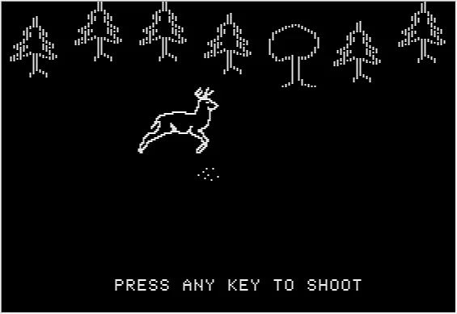One of the more recognized versions of The Oregon Trail is one that was designed and programmed from October 1984 to the end of July 1985. The team that created it: Philip Bouchard, John Krenz, Charolyn Kapplinger, Shirley Keran, and Bob Granvin.
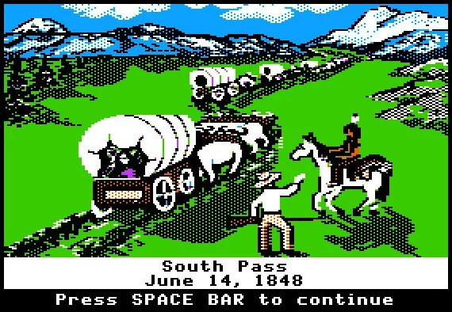In fact, it's likely that the version of *The Oregon Trail* that most people probably were familiar with was the 1985 Apple II version. The 1985 design was also implemented on the IBM PC but it first appeared on the Apple II. Certainly the thematic structure of the game remained largely the same as shown by a schematic of how the new version was visualized.
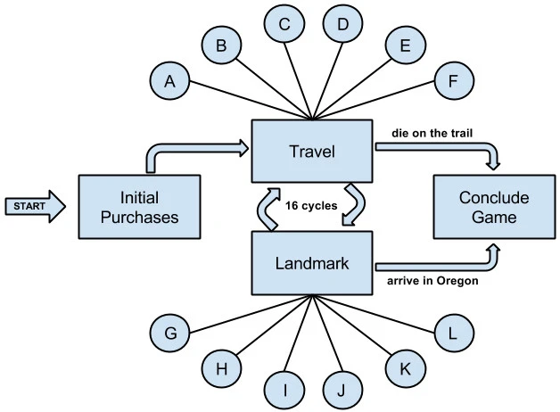The updated version, however, did provide some significant differences, such as a mini-game for rafting.
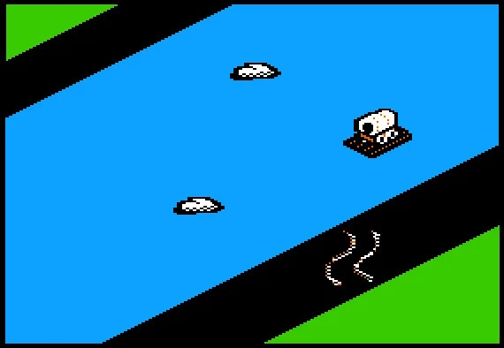It's worth noting that the narrative aspects were kept front and center for the most, including the ability to personalize the game play a bit.
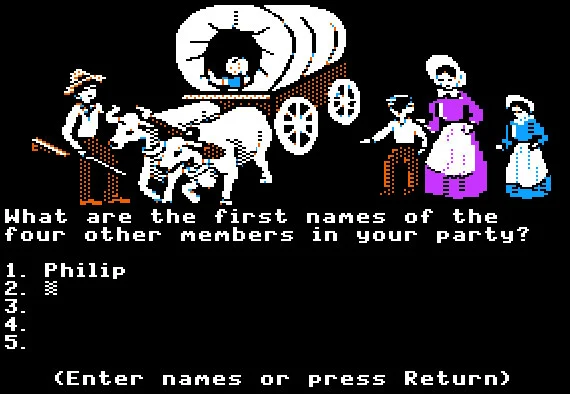